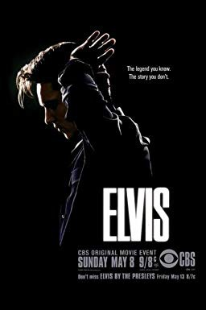
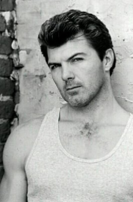

Auszeichnungen: 1 GoldenGlobes gewonnen
 
 IMDB-Wertung: 7.4 / 10
IMDB-Wertung: 7.4 / 10  Metascore: 0
Metascore: 0 
Made-for-TV biopic about Elvis Presley. This movie covers Elvis' life from the year 1952 all the way up to his comeback in 1968. The film will focus on his beginnings at Sun Records, his rise to fame with his first hit single "That's Alright Mama" in 1954, discovery by Col. Tom Parker, and his rise to stardom in the 50's, the condemning of his music after a few gigs, making movies in Hollywood, draft into the army in 1958, and his first meeting with Priscilla Beaulieu (who would eventually become his wife in 1967). The film will also deal with his return in 1960, his decline in popularity while making movies, and his successful TV comeback in 1968, a few months after his daughter Lisa Marie is born. The movie does not cover Elvis' final years, probably because the producers thought it would be too painful, but it is mentioned in a screen caption at the end.
Jahr: 2005
Dauer: 85 Minuten
FSK: 6
Land: USA Studio: CBSTonspuren: DTS - ,
Untertitel:
Auflösung: 1080p (1920x1080) Größe: 6717 MB
Genre: Drama, Musik, Biographie, TV-Serie
Regisseur: James Steven Sadwith
Drehbuch: Patrick Sheane Duncan
Soundtrack:
Darsteller:
- Antonia Bernath als Priscilla Presley, 2 episodes, 2005
 Jack Noseworthy als Steve Binder, 2 episodes, 2005
Jack Noseworthy als Steve Binder, 2 episodes, 2005 Robert Patrick als Vernon Presley, 2 episodes, 2005
Robert Patrick als Vernon Presley, 2 episodes, 2005 Camryn Manheim als Gladys Presley, 2 episodes, 2005
Camryn Manheim als Gladys Presley, 2 episodes, 2005- Clay Steakley als Bill Black, 2 episodes, 2005
 Mark Adam als Scotty Moore, 2 episodes, 2005
Mark Adam als Scotty Moore, 2 episodes, 2005 Robert C. Treveiler als Larry Geller, 2 episodes, 2005
Robert C. Treveiler als Larry Geller, 2 episodes, 2005- John Boyd West als Red West, 2 episodes, 2005
- Randy McDowell als Gene Smith, 2 episodes, 2005
 Jill Jane Clements als Marion Keisker, 2 episodes, 2005
Jill Jane Clements als Marion Keisker, 2 episodes, 2005 Dan Triandiflou als George Klein, 2 episodes, 2005
Dan Triandiflou als George Klein, 2 episodes, 2005- Tom Humbarger als Junior Smith, 2 episodes, 2005
- Joseph B. Smith als Lamar Fike, 2 episodes, 2005
 Douglas M. Griffin als Chet Atkins, 2 episodes, 2005
Douglas M. Griffin als Chet Atkins, 2 episodes, 2005 Tony Bentley als Hal Wallis, 2 episodes, 2005
Tony Bentley als Hal Wallis, 2 episodes, 2005 Dane Rhodes als Edd Hopper, 2 episodes, 2005
Dane Rhodes als Edd Hopper, 2 episodes, 2005- Bryan Lee McGlothin als Judge Sam Friedman, 2 episodes, 2005
 Ritchie Montgomery als Horace Logan, 2 episodes, 2005
Ritchie Montgomery als Horace Logan, 2 episodes, 2005- Eugenie Bondurant als Mrs. Hughes, 2 episodes, 2005
- Stephen Rue als Southern Politician, 2 episodes, 2005
- Ben Shelton als Tough Kid #1, 2 episodes, 2005
 Marcus Lyle Brown als Wynonie Harris, 2 episodes, 2005
Marcus Lyle Brown als Wynonie Harris, 2 episodes, 2005- Azure Parsons als Actress, 2 episodes, 2005
 John McConnell als Disc Jockey, 2 episodes, 2005
John McConnell als Disc Jockey, 2 episodes, 2005 Bill Martin Williams als Newsreel Reporter, 2 episodes, 2005
Bill Martin Williams als Newsreel Reporter, 2 episodes, 2005- Leon Contavesprie als Assistant Director, 2 episodes, 2005
- Ben Lokey als Choreographer, 2 episodes, 2005
- Anne Ewen als Pretty thing, 2 episodes, 2005
 Tim Guinee als Sam Phillips, 2 episodes, 2005
Tim Guinee als Sam Phillips, 2 episodes, 2005 Rose McGowan als Ann-Margret, 2 episodes, 2005
Rose McGowan als Ann-Margret, 2 episodes, 2005 Randy Quaid als 'Colonel' Tom Parker, 2 episodes, 2005
Randy Quaid als 'Colonel' Tom Parker, 2 episodes, 2005 Jonathan Rhys Meyers als Elvis Presley, 2 episodes, 2005
Jonathan Rhys Meyers als Elvis Presley, 2 episodes, 2005- Ryan Martin Dwyer als Roadie at 68' Comeback Special, 1 episode, 2005
- Melissa Caudle als Hytop Bar Patron (uncredited), unknown episodes
- Gabriel Dayan als News Reporter (uncredited), unknown episodes
- Gary Desroche als Hank Garland (uncredited), unknown episodes
- Matthew Dufour als Hoyt Hawkins (uncredited), unknown episodes
 Louis Dupuy als Freddie Burnstein (RCA Recording Executive) (uncredited), unknown episodes
Louis Dupuy als Freddie Burnstein (RCA Recording Executive) (uncredited), unknown episodes- Jan Falk als Reporter (uncredited), unknown episodes
 Gino Galento als Reporter (uncredited), unknown episodes
Gino Galento als Reporter (uncredited), unknown episodes- Justin Groetsch als Photographer (uncredited), unknown episodes
- Chris McFarland als Band leader (uncredited), unknown episodes
- Johnny Rock als Reporter (uncredited), unknown episodes
-  Codie Scott als Security Guard (uncredited), unknown episodes
- Gary Michael Smith als TV Studio Floor Director (uncredited), unknown episodes
 Michael Wozniak als News Photographer (uncredited), unknown episodes
Michael Wozniak als News Photographer (uncredited), unknown episodes- Tom Cruise » #98 on STARmeter CELEBS Born Today Celebrity News Most Popular Celebs PHOTOS Latest Stills Latest Posters Photos We Love EVENTS Awards Central Festival Central Oscars Golden Globes Sundance Cannes San Diego Comic-Con Emmy Awards Venice Film Festival Toronto Film Festival Tribeca LA Film Festival All Events News & Community LATEST HEADLINES Andrew Lincoln Posts Heartfelt Goodbye Letter to The Walking Dead Fans 1 day ago | TVGuide - Breaking News Michael Keaton and Seth Rogen To Star In Dark Comedy 'King Of The Jungle' 49 minutes ago | The Playlist 'Halloween' Repeats at #1, Helping October 2018 Reach Record Heights 1 day ago | Box Office Mojo NEWS Top News Movie News TV News Celebrity News Indie News COMMUNITY Contributor Zone Polls Watchlist YOUR WATCHLIST if (!('imdb' in window)) window.imdb = ; window.imdb.watchlistTeaserData = href : /list/watchlist, src : https://m.media-amazon.com/images/G/01/wprs/images/navbar/watchlist_slot1_logged_out._CB484021159_.jpg , href : /search/title?count=100&title_type=feature,tv_series, src : https://m.media-amazon.com/images/G/01/wprs/images/navbar/watchlist_slot2_popular._CB484021159_.jpg , href : /chart/top, src : https://m.media-amazon.com/images/G/01/wprs/images/navbar/watchlist_slot3_top250._CB484021159_.jpg ; The essential resource for entertainment professionalsFind industry contacts & talent representationAccess in-development titles not available on IMDbGet the latest news from leading industry tradesClaim your page and control your brand across IMDb & AmazonTryIMDbProFreeTry IMDbPro Free | Help Sign in with Facebook Other Sign in options if (typeof uet == 'function') uet(ne); doWithAds(function()if ('injected_slot' != 'injected_slot') ad_utils.register_ad('injected_navstrip');); doWithAds(function()if ('injected_slot' == 'cornerstone_slot') ad_utils.inject_serverside_ad('injected_navstrip', '');else if ('injected_slot' == 'injected_slot') ad_utils.inject_ad.register('injected_navstrip'); else ad_utils.gpt.render_ad('injected_navstrip');, ad_utils not defined, unable to render client-side GPT ad or injected ad.); doWithAds(function()if ('injected_slot' != 'injected_slot') ad_utils.register_ad('injected_billboard');); doWithAds(function()if ('injected_slot' == 'cornerstone_slot') ad_utils.inject_serverside_ad('injected_billboard', '');else if ('injected_slot' == 'injected_slot') ad_utils.inject_ad.register('injected_billboard'); else ad_utils.gpt.render_ad('injected_billboard');, ad_utils not defined, unable to render client-side GPT ad or injected ad.); Edit Elvis (2005– ) if ('csm' in window) csm.measure('csm_body_delivery_started'); Full Cast & Crew Series Directed by James Steven Sadwith als
- Jennifer Rae Westley als Dixie Locke, 2 episodes, 2005
- Eric William Pierson als D.J. Fontana, 2 episodes, 2005
- Marion Zinser als Grandma Minnie, 2 episodes, 2005
Datei: X:\2005(A-F)\Elvis (2005, FSK6, 1920x1080) Teil 1.mkv seit 29.10.2018
Festplatte: HD 2003-2004-2005(A-F)
 Es gibt insgesamt 49 Filme in der Gruppe '2005(A-F)'
Es gibt insgesamt 49 Filme in der Gruppe '2005(A-F)'
")